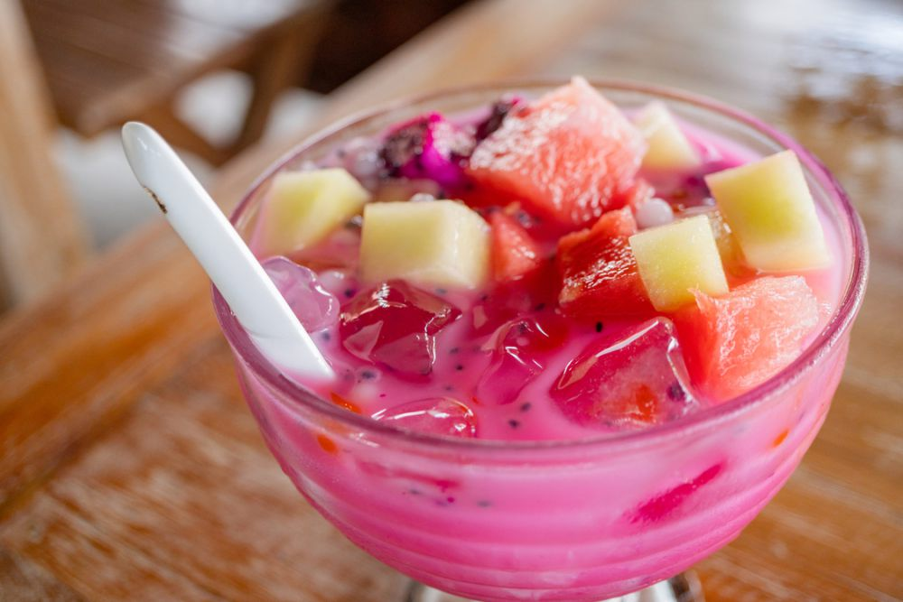

Es Buah Sederhana

Description
Resep Es Buah Sederhana – Resep MANTUL (Manis Nikmat dalam Tujuh Langkah)
Ingredients :
- 1 buah naga
- 200 gr melon kuning
- 200 gr pepaya
- 200 gr anggur
- 200 gr nata de coco
- 250 gr semangka
- 150 gr gula pasir
- 300 ml air
- 2 lembar daun pandan
- Es batu secukupnya
- 100 ml Frisian Flag Susu Kental Manis Full Cream GOLD yang Nikmat
Steps :
- Rebus air, gula pasir, dan pandan hingga mendidih
- Bulatkan pepaya
- Bulatkan melon
- Bulatkan semangka
- Bulatkan buah naga
- Tuang air gula, es batu
- Tambahkan Frisian Flag Susu Kental Manis Full Cream GOLD yang Nikmat, aduk, tambahkan buah-buahan, dan nata de coco